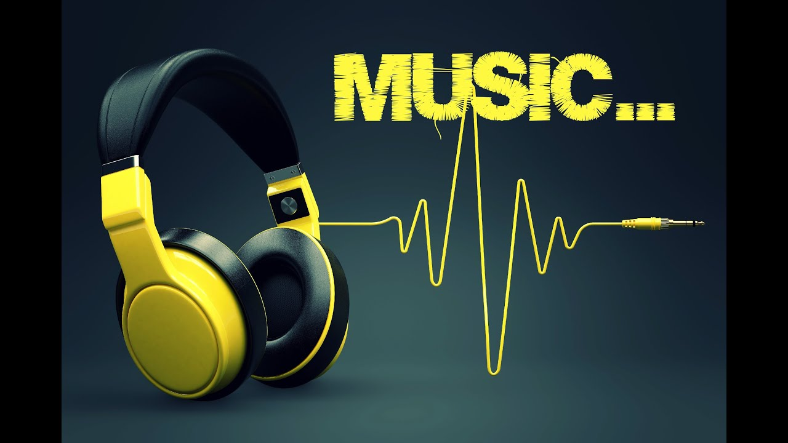
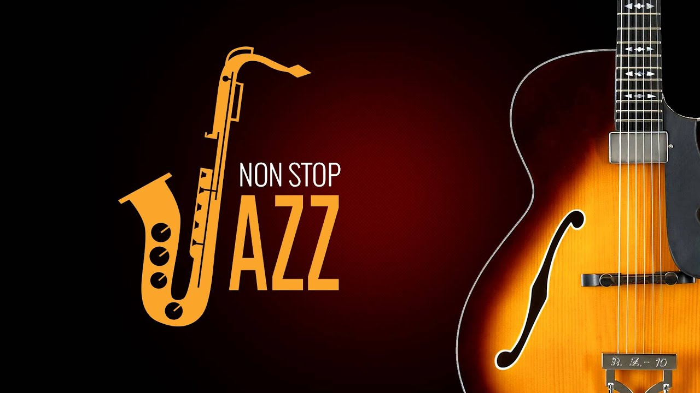
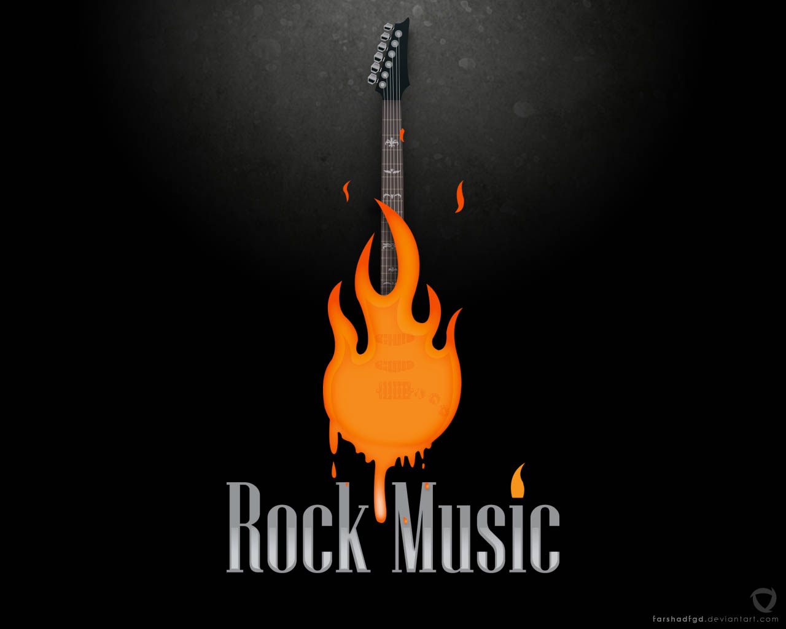
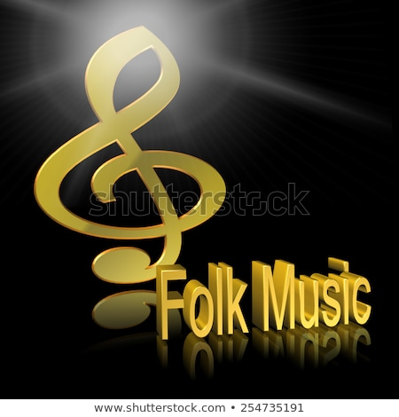

types of Music
Music is a blissful art which is admired by almost everyone. Music can be divided into numerous categories based on elements, temperament, tone, etc. Some of the popular music types are – Jazz, Hip Hop, Rock, Blues, Country, R&B, Folk and Fusion. It is very difficult to define music. However, it can be considered as a fusion of sounds and notes in such a way that it is soothing or desirable for the ears. It can be produced by different types of musical instruments. Simply, it refers to anything which has a pleasant sound. It is created for generating a lot of pleasure. The music reflects the profile of a certain time when it was created. It is affected by the environment, and thus is also valued for being a precious time bound but still timeless creation. This art fascinates many musicians and they give their soul for creating some good and unique music.
Jazz
This kind of music has its root in Southern United Sates. It originated as gospel and blues music of the Deep South. It is often identified by its strong and prominent meter. Its Pitch and timbre are often distorted in jazz and it also employs a vary degree of improvisations. The forceful rhythm of jazz has a broader scope as it is extended by every new artists of a specific generation.
Rock
This has its root in rock and roll and pop music. It gained momentum during the 1960s. Rock and roll is derived from rock music, and therefore many times rock and roll form is considered to be the same as rock. Instruments like guitar, drums and bass are used with a strong vocal melody in rock style. It is usually created with a strong back beat. Rock music is nearly inseparable with guitar as it is played around the guitars mainly. During the 1960s, it combined with folk music for creating folk rock. This blending was further followed by blues to create blues rock and jazz to create jazz rock.
Pop
Pop stands for popular. This music has no particular set of rules to be followed to be placed in this category; still it is closely associated with rock and rock and roll styles. The essential requirement is that the music should be favored or liked by the listeners. This pop music is targeted for a wide audience. The commercial success of the music is also a parameter to judge a pop song. Pop music is characterized by its song made up of verse and repeated chorus.
Folk
This music totally belongs to the traditions. It is often gifted from one generation to the next. Most of the tunes or music have unknown original authors. This music is powerful as it goes through some modification while passing through the generations’ where its memorable part further gets stronger. The term folk music is also used for a modern popular music which is based on the traditional folk music and uses guitars type instruments instead of traditional instruments. Folk music is known for its rawness and possesses a charm of being an entity of unknown origin.